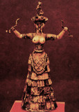
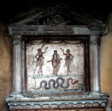

La Madonna della Misericordia
|
On the campanile of the Catholic church, I Carmini, in Campo Santa Margherita, a statue of the Madonna standing on a crescent moon holds two strings attached to what appears to be a wet rag. This represents the Scapular, a sacred cloth which Mary offers to the Carmelite faithful, who believe that it can protect them from the eternal fires of Purgatory. How far back in Mediterranean cultural history can we trace a link between women and suspended, sacred cloth?
 |
Snake Goddess of Crete  |
Pompeii Family Shrine  The Virgin Ascending |
Jungian analyst Ann Shearer in her book Athene: Image and Energy, describes an archaic 5,000 BC statue of Athene: on a pediment on the Acropolis the goddess holds out a cape fringed with writhing snakes, symbols of regeneration and eternal life. On the island of Crete, mid-second-millennium Snake Goddesses wore snakes on their wrists and waists. For ancient Egyptians the knot on the girdle of the goddess Isis was a symbol of the key of fertility and life. A fresco in a family altar in a home in Pompeii visually connects the loop of a woman's shawl and the coils of a serpent. Marina Warner, in her Alone of All her Sex, the Myth and the Cult of the Virgin Mary, shows how the tradition of Aphrodite's girdle and the girdle of the Amazon Queen Hippolyta was transmuted into Mary's girdle or belt. I suggest that the girdle which the Madonna gives to Doubting Thomas as she ascends heavenward in Venetian painter Palma il Vecchio's Assumption of the Virgin is a variation on the magic girdle theme and is thematically connected to the symbolic serpents of the Cretan Snake-Goddesses and to the chthonic Athene. Titian's Madonna as she surges heavenward reenacts this iconographic tradition. |
All images on these pages are copyright © 1999 by Holly Smith Pedlosky
To learn more, send e-mail to Holly Smith Pedlosky
|
Would you like to meet some more Venetian housewives? |
Would you like to see some more Laundry? |
Would you like to find out more about laundry, cloth, and draped fabric in Venetian art? |